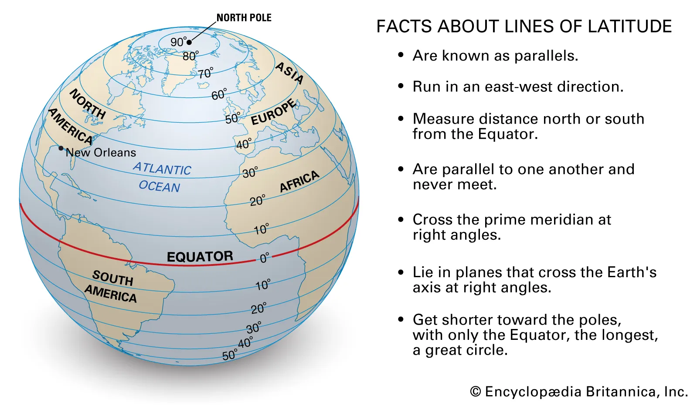

library(tidyverse)
library(sf)
sea_bndry <- st_read("data/borders.shp")
ggplot() +
geom_sf(data = sea_bndry[1])Welcome to the first PSTAT 100 Mini-Project! Please keep in mind that mini-projects will be (intentionally) a bit open-ended. This is because most “real-world” data science projects - whether they be in industry or in academia - are also open-ended. Instead of having a set series of questions that can be answered with only one or two methods, project-type questions can often be answered in many different ways, using many different techniques.
We do expect your final product to be more akin to a report than a homework set, though we will not necessarily expect all of the formality of an academic paper (we’re saving that for the final project). Having said that, here are some things to keep in mind:
Don’t try to answer the report questions as a list. Though this report will ask you to answer a series of questions, you should not seek to simply answer them as you would a set of homework questions. Rather, write full sentences, and always justify your answers with references to plots or outputs of code.
Do NOT include code in your report outside of the appendix. This may seem counterintuitive at first glance, but this is actually a very common practice in report-writing: you should relegate all of your code to an appendix, opting to include only the results in the main body of your report. (Remember that you can always leverage the
echo = Foption in your code chunks!)
Introduction
Many governmental agencies report free-to-use data on their website. This also includes city-level administration. In this project, we will be consulting a series of datasets that were uploaded by the City of Seattle, in this database. Our particular goal in this project is to study the trees maintained by the City of Seattle. We will do so by way of a series of statistical graphics; reports of this type (that seek to explore data and answer questions through plots) are sometimes called visualization reports.
Background
One of the goals of this project is to give you practice with generating geographic maps in R. In the cartographic1 world, objects are typically identified by a pair of points called a coordinate. Geographical coordinates consist of a latitude and longitude value, which can be thought of like x- and y-coordinates in a Cartesian coordinate system, respectively.

Data Description
For this project, we will primarily be working with two files. The first file is called SDOT_Trees.csv, which contains the bulk of the data we are analyzing. A data dictionary can be found here2
The second file is called borders.shp, and contains information about the city and neighborhood geographic boundaries (stored in what is known as a shape file; you don’t need to know what this means for this project).
Project Questions
Warning
Please remember to write your descriptions in narrative form; don’t try and list the answers to these questions one by one!
Part I: Exploring the Dataset
All data science projects begin with an exploratory phase. (We will actually discuss the details of this phase later in the course.) As such, use the dataset to answer the following questions:
How do missing values appear to be encoded in this dataset? Look through the various values in the dataset to try and answer this question.
What does the distribution of trees throughout the city look like? To answer this question, be sure to generate at least one map. You can use the template code below to get an outline of the city of Seattle, with neighborhood boundaries included- it is up to you to figure out how to overlay the locations of the trees over this map. (Also, play around with the various aesthetic attributes to produce a plot that is presentation-quality.)
- How many observations are included in the dataset? How many variables were these observations taken on? Which variables have the most amount of missingness, and which have the least?
Part II: Tree Health
In this part of the project, we will explore the various factors that affect tree health.
As a first pass, we can consider a tree’s diameter to be a proxy for how healthy this is (we will question this assertion later). With this in mind, consider the following questions:
How is tree health (i.e. tree diameter) affected by the type of ground the tree is growing on? Does your answer appear to change based on the genus of tree?
What are some factors (other than type of ground) that affect tree health (tree diameter)? What are some problems with using tree diameter as a proxy for tree health?
What are some other factors (present in the dataset) that could be used as a proxy for tree health? (Justify your answer using an appropriate plot.)
Part III: Sources of Funding
In this part of the project, we will explore the potential affect of funding sources on various aspects of Seattle-area trees.
What are the sources of funding represented in this dataset? You shouldn’t just include the agency abbreviations- use Google to identify the full name of any/all agencies appearing in this dataset.
Which of these agencies seem to fund the upkeep of the most trees? Which seem to fund the fewest? Again, refer to agencies by their full names, whenever possible.
Does there appear to be a geographical pattern to which trees each agency funds? You should generate at least one map to answer this question.
Is there a relationship between who funds a tree and who owns the tree? Consider including some numerical answers here as well: what proportion of trees are owned by the agency that funds their upkeep? What proportion of trees are privately owned?